13분 만에 시작하기
설치할 파일은 없어요. 인터넷 주소를 열고 홈 화면에 추가하면 앱처럼 써요.
먼저 가상 학생으로 둘러보기 (시연 모드)
실제 학생을 넣기 전에 시연 모드로 모든 기능을 눌러 보세요. 가상 학교 · 가상 학생 80명 · 기록 · PAPS · 수행평가가 미리 들어 있어요. 실제 자료와는 완전히 따로 저장돼요.
화면 맨 위 주황 띠의 메뉴에서 가상 자료 처음 상태로 되돌리거나 시연 끝내기를 할 수 있어요.
홈 화면에 추가하기 (꼭 해 주세요)
아이폰 · 아이패드
사파리로 앱 주소를 열고 → 아래 공유 버튼 → 홈 화면에 추가. 사파리로만 쓰면 7일 동안 안 열었을 때 자료가 지워질 수 있어서 꼭 추가해 주세요.
안드로이드
크롬으로 열고 → 오른쪽 위 ⋮ → 앱 설치(또는 홈 화면에 추가).
교무실 PC
크롬 · 엣지로 열고 주소창 오른쪽 설치 아이콘을 누르면 창 하나짜리 앱이 돼요. 공용 PC에서는 쓰지 마세요.
인스타 · 카톡에서 열었다면
앱 안 브라우저는 자료가 쉽게 사라져요. ⋯ → 다른 브라우저로 열기로 사파리 · 크롬에서 다시 여세요.
처음 켜면
- 이용 안내를 읽고 체크해요. 자료는 이 기기에만 있고, 백업이 꼭 필요하다는 안내예요.
- 4~6자리 PIN을 정해요. 앱을 열 때마다 물어봐서 폰을 잃어버려도 학생 정보를 지켜요.
- 홈 맨 위 시작 준비를 순서대로 따라 해요: 명렬 → 수업반 → 시간표(선택) → 첫 백업. 다음 장에서 자세히 설명해요.
메뉴 6개
휴대폰은 아래 탭, PC는 위쪽 큰 메뉴와 왼쪽 하위 메뉴로 움직여요.
| 홈 | 시계 · 날씨 · D-day · 오늘 수업 · 달력 · 이번 주 시간표 · 기초 설정 |
|---|---|
| 수업 | 내 수업반(기록표 · 카드 · 출결 · 일지) · 종목 수업자료 · 진도표 · 수업 도구 · 학생 관리 |
| PAPS | 기록 입력 → 자동 등급 → 통계 · 그래프 → 나이스 업로드 파일 |
| 평가 | 수행평가 채점 · 기록지 · 나이스 파일, 세특 쓰기, 설문 · 자기평가 |
| 업무 | 학교운동부 · 스포츠클럽 · 매년 기안 문서 · 소위원회 · 예산 · 견적서 → 품의 · 같이 쓰기 |
| 설정 | 학교 정보 · PIN · 기록 버튼 · 백업 · 사용법 · 업데이트 소식 |
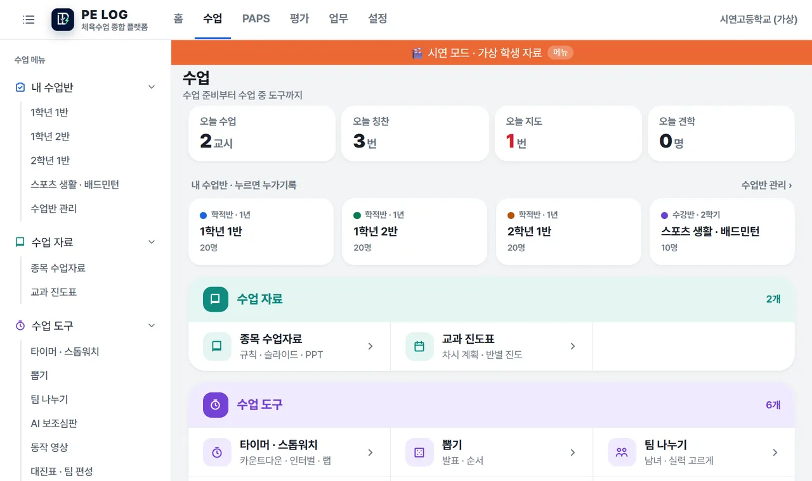
2처음 설정 (학기 초 한 번)
홈 › 기초 설정을 위에서부터 따라 하면 돼요. 명렬 → 수업반, 이 두 가지면 기록을 시작할 수 있어요.
① 명렬 올리기
- 나이스 PAPS 일괄업로드 메뉴에서 받은 학생명렬표 엑셀을 그대로 올려요. 다른 모양의 엑셀도 머리글(학년 · 반 · 번호 · 이름 · 성별 · 학번)을 찾아 읽어요.
- 엑셀에서 복사해 붙여 넣기도 돼요. “1-3-12 홍길동”, “10312 홍길동”, 반을 고른 뒤 “12 홍길동”이나 이름만 적어도 알아봐요.
- 미리보기 표에서 빠진 이름 · 겹친 번호는 빨갛게 보여요. 표 안에서 바로 고친 뒤 저장해요.
- 생년월일은 읽기만 하고 저장하지 않아요. 전출생은 지우지 않고 상태만 바꿔 기록을 남겨요.
② 수업반 만들기
- 학적반: 명렬의 반 그대로예요. 내가 수업하는 반만 골라요. 명렬을 다시 올리면 학생이 자동으로 바뀌어요.
- 수강반: 선택과목 · 합반처럼 여러 반 학생을 모은 반이에요. 명렬에서 체크하거나 명단을 붙여 넣어 만들어요.
- 이름 · 과목 · 기간(1년 · 1학기 · 2학기) · 색을 정해요. 학기가 끝난 반은 숨겨도 기록은 남아요.
③ 시간표 · 학사일정 (선택, 하면 편해요)
- 홈 › 나이스에서 불러오기: 학교를 찾으면 학급 · 반별 시간표 · 학사일정을 나이스 공개 자료로 불러와요. 체육 과목 칸만 골라 내 시간표와 수업반을 자동으로 만들어요.
- 홈 › 전체 체육 시간표: 컴시간알리미를 쓰는 학교는 학교와 내 이름만 넣으면 내 수업이 시간표에 들어가고, 교시 시작 시각도 자동으로 정해져요. 다른 체육 선생님과 체육관이 겹치는 시간도 빨갛게 보여요.
- 시간표를 넣으면 수업 시간에 홈에 지금 수업이 크게 뜨고, 그 반으로 바로 들어가요.
④ 평가계획서 넣기 (학기 초에 한 번에)
학교 평가계획서 PDF(한글 파일은 PDF로 저장해서)를 넣으면 두 가지를 한 번에 만들어요.
- 교과 진도표 초안: ‘교수학습 운영 계획’ 표를 읽어 주마다 시수만큼 차시로 펼쳐요.
- 수행평가: 평가마다 성취기준 · 평가 시기 · 반영비율 · 채점 기준(남녀 기준, 미참여 점수, 체크리스트)을 읽어 만들어요. 채점 구간이 겹치거나 비면 알려 줘요.
⑤ 쓰지 않는 기능 숨기기
설정 › 기능 고르기에서 맡은 일(체육 수업 · PAPS 측정 · 체육부장 운영 · 학교체육 업무)을 고르면 필요한 메뉴만 켜져요. 숨겨도 자료는 지워지지 않아요.
3홈 — 오늘 할 일을 한눈에
앱을 열면 가장 먼저 보이는 화면이에요.
- 맨 위 줄: 큰 시계(지금 수업 끝까지 · 다음 수업까지 남은 시간), 날씨, D-day(가장 가까운 고사 · 업무 일정).
- 날씨 카드: 날씨 그림 · 기온 · 강수확률, 미세먼지 · 초미세먼지 등급(에어코리아). 나쁨 이상 · 비 · 폭염 · 한파면 실외 수업 주의를 알려 줘요. 학교 위치는 나이스 학교 주소로 자동으로 정해지고, 시도 · 시군구로 직접 골라도 돼요.
- 지금 수업 · 오늘 수업: 누르면 그 반 기록 화면으로 바로 가요.
- 달력: 이번 달 학사일정 · 업무 일정. 날짜를 누르면 그날 일정이 아래에 나와요.
- 이번 주 시간표: 요일 × 교시 표에 수업반 색, 지금 교시는 테두리.
- 이번 주 수업: 칭찬 · 지도 · 견학 · 결석을 지난주 같은 때와 비교해요. 누르면 지도가 쌓이는 학생, 칭찬을 아직 못 받은 학생, 늦은 진도, 덜 끝난 채점이 모여 있어요.
- 땅콩이 · 오늘 브리핑: 오늘 수업 · 나이스에 안 옮긴 출결 · 늦은 진도 · 남은 채점 · 다가오는 업무를 학생 이름 없이 수만 알려 줘요.
- 홈 화면 배치 바꾸기(맨 아래): 칸 순서를 위아래로 옮기거나 안 쓰는 칸을 숨겨요.
4수업 — 기록표 · 카드 · 출결
수업 › 내 수업반에서 반을 열면 기록 화면이 나와요. 보기는 5가지예요: 기록표 · 카드 · 항목 · 체크표 · 출결. 처음에는 기록표가 열려요.
기록표 — 나이스처럼 한 장에
왼쪽은 학생, 위는 이 달의 수업 날짜(주차별)예요. 칸에 ★칭찬 · ▲지도 · 견학 · 결석 · 지각 · 조퇴 · 결과가 보여요.
- 위 입력 줄에서 출결(결석 · 지각 · 조퇴 · 결과), ★칭찬 항목(정리정돈 · 친구 도움 …), ▲지도 항목(체육복 · 실내화 · 교구) 중 하나를 골라요.
- 학생 × 날짜 칸을 누르면 바로 기록돼요. 다시 누르면 빠져요(나이스 출결 입력과 같은 방식).
- 아무것도 고르지 않고 칸을 누르면 그 날짜의 기록 창이 열려요.
- 표 위 번호 · 이름 찾기로 학생을 바로 찾고, 기록 있는 학생만을 켜면 이 달에 기록이 있는 학생만 보여요.
- 오른쪽 끝에 이 달 합계, 결석이 많아 출석률이 부족해질 학생은 이름 옆에 주의 · 미달이 떠요(담임 확인용 참고).
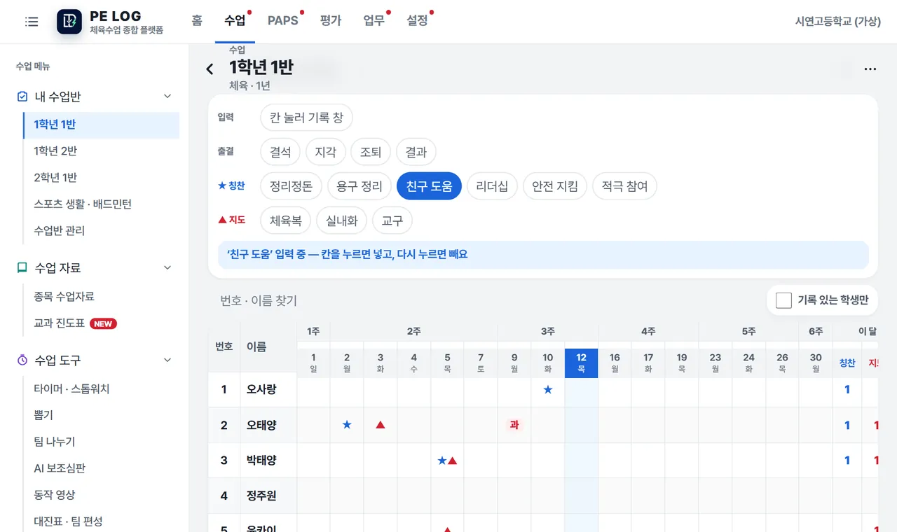
카드 — 수업 중 한 손으로
- 학생 카드를 누르면 왼쪽 칭찬, 오른쪽 지도 버튼이 나란히 나와요. 버튼 한 번이면 기록 끝이에요.
- 기록 직후 5초 동안 실행취소가 떠요. 견학 · 관찰 메모 · 세특 키워드도 같은 창에서 남겨요.
- 카드의 ★숫자는 이 반에서 받은 칭찬 누적이에요. 지도 횟수는 학생들이 볼 수 있는 카드에 띄우지 않아요.
- 여러 명을 켜면 체육복을 안 가져온 5명처럼 여러 학생에게 한 번에 기록해요. 날짜 줄을 눌러 지난 날짜에도 기록할 수 있어요.
항목 · 체크표 — 여러 명을 빠르게
- 항목: 항목(예: 체육복)을 먼저 고르고 해당 학생들을 차례로 눌러요. 한 번 더 누르면 풀려요.
- 체크표: 출석부처럼 학생 × 항목 표에 체크해요. 한 반을 1분 안에 체크할 수 있어요.
출결 — 일간 · 월간
- 일간: 모두 출석에서 시작해요. 안 온 학생 카드를 누를 때마다 결석 → 지각 → 조퇴 → 결과 → 출석으로 바뀌어요(나이스 출결 이름). 결석 · 결과 학생은 그날 참여 수에서 빠져요.
- 사유(질병 · 인정 · 미인정 · 기타)는 사유 보기 · 넣기를 눌러야 보여요. 건강 정보라 기본으로 가려 둬요.
- 월간: 학생 × 이 달 수업일 표로 한 달 출결을 한눈에 보고, 칸을 눌러 바로 고쳐요.
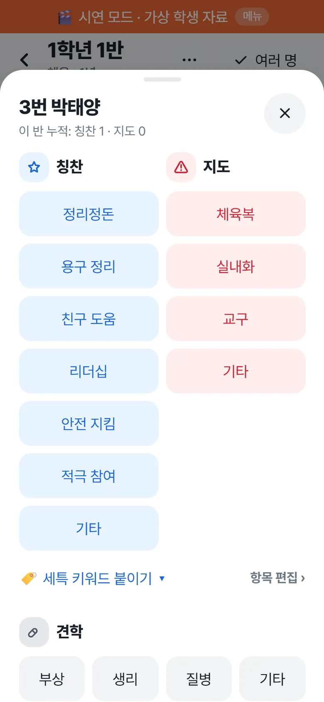
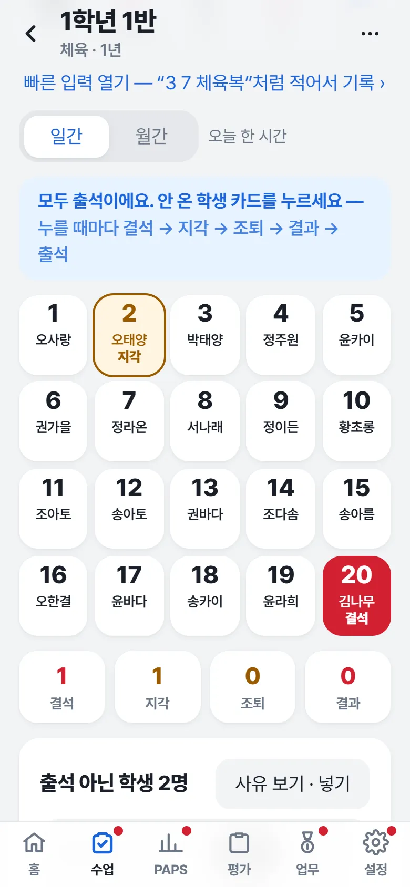
빠른 입력 — 글로 적어서 한 번에
보드의 빠른 입력 열기에 “3 7 체육복”, “12 견학 부상”, “5 지각”처럼 적고 읽기를 눌러요. 누구에게 무엇을 기록할지 보여 주고, 기록을 눌러야 저장돼요. 번호 범위(3~7)와 이름도 돼요. 정해진 규칙으로만 읽어서 인터넷 없이 써요.
나이스에 옮길 출결
수업 › 나이스에 옮길 출결에 아직 나이스에 안 옮긴 출결이 날짜 · 수업반별로 모여요. 복사해서 옆에 두고 나이스에 넣은 뒤 옮겼어요를 누르면 목록에서 빠져요. 출결을 고치면 다시 나와요. 앱이 나이스에 대신 넣지는 않아요.
요약 · 누적 · 수업 일지
- 수업 › 이번 주 요약: 수업반마다 지난주와 비교, 지도가 쌓이는 학생(최근 2주 3번 이상) · 칭찬을 아직 못 받은 학생 · 늦은 진도 · 덜 끝난 채점. 횟수만 세요.
- 반 화면 오른쪽 위 ⋯ → 누적 기록: 기간별(이번 달 · 1학기 · 2학기 · 학년도) 학생 합계와 항목별 횟수, 엑셀로 받기.
- 수업 일지: 반 화면 날짜 아래에서 단원 · 한 일 · 다음 시간 메모를 적어요. 다음 시간에 지난 메모가 먼저 보이고, 진도표의 그날 차시를 ✓로 끝낼 수 있어요.
- 수업 › 학생 관리: 전체 학생 명렬(학생별 기록 · 리포트), 반 요약, 견학(목록 · 대체 과제), 체육부장(지정 · 활동 체크).
- 칭찬 · 지도 항목은 설정 › 기록 버튼에서 더하고 바꿔요.
5수업 자료 · 수업 도구
수업 › 수업 자료와 수업 › 수업 도구에 있어요. 반 화면 ⋯에서도 그 반으로 바로 열려요.
종목 수업자료 · 슬라이드 · PPT
- 23개 종목(농구 · 축구 · 넷볼 · 배구 · 배드민턴 · 탁구 · 피클볼 · 티볼 · 플라잉디스크 · 육상 · 체조 등)을 영역형 · 네트형 · 필드형 · 기술형으로 나눴어요.
- 경기 진행 · 주요 규칙 · 반칙 · 용구 규격(공기압까지) · 경기장 그림을 줄마다 공식 규칙서 조항과 함께 보여 줘요.
- 핵심 규칙: 그 종목다운 규칙(예: 넷볼 — 몸싸움 없음 · 드리블 없음 · 포지션마다 구역)을 그림으로 맨 앞에.
- 한 장으로 보는 규칙: 핵심 규칙을 그림 한 장으로. 그림 받기로 빔 · 인쇄 · 단톡방에.
- 슬라이드로 보기: 검은 화면에 큰 그림, 누를 때마다 한 줄씩 나와요(→ · 스페이스 다음, ← 이전, O 전체 보기, F 전체 화면). 끝에는 O/X 퀴즈. PPT로 받기로 같은 모양의 파일도 받아요.
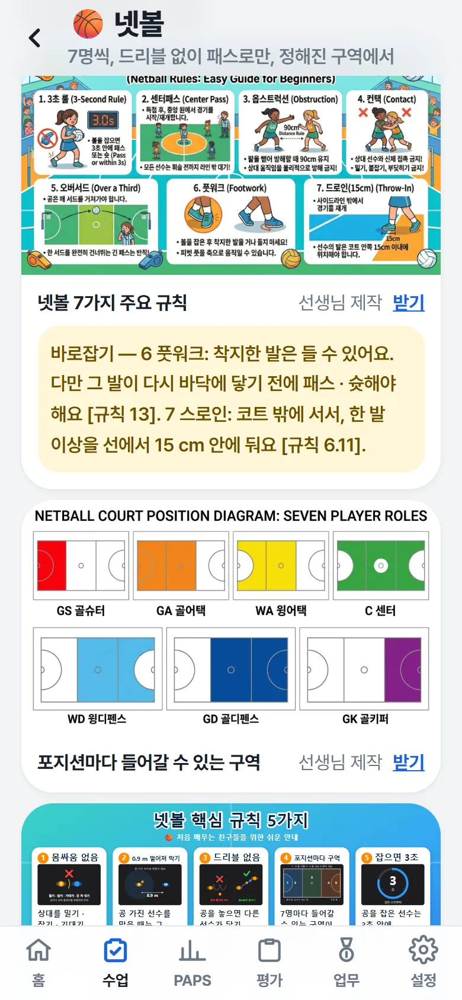
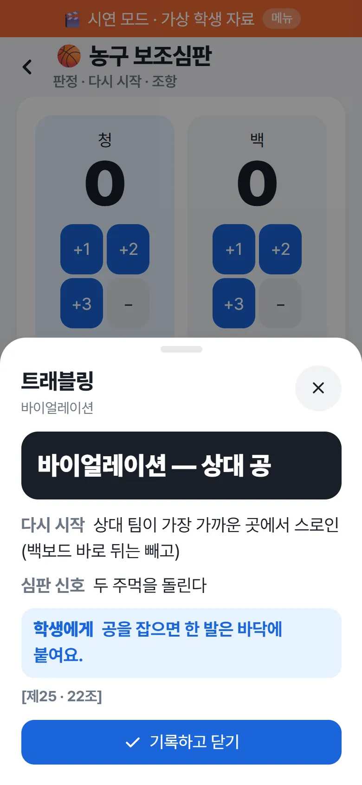
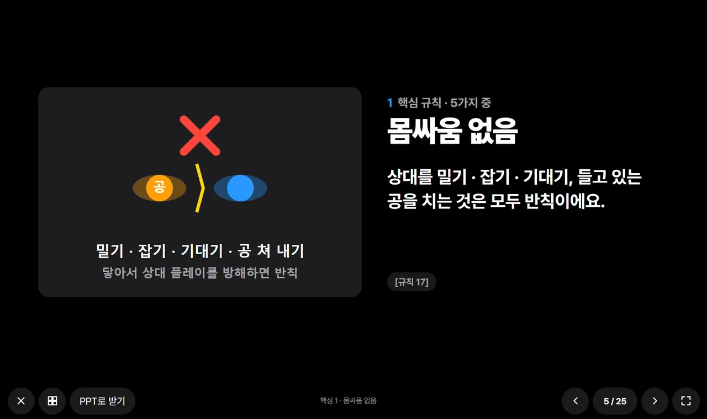
AI 보조심판
- 점수 · 경기 시간 · 팀 파울(농구 5번째 · 풋살 6번째 알림)을 한 화면에서 봐요.
- 반칙 버튼을 누르면 판정 · 다시 시작 방법 · 심판 신호 · 학생에게 할 한마디 · 조항이 크게 떠요.
- 우리 반 규칙을 적어 두면 늘 위에 보여요.
- 버튼에 없는 상황은 AI에게 묻기(선택)로 물어봐요. 상황 글 속 학생 이름은 가려서 보내고, AI가 앱 자료에 없는 조항을 대면 ‘확인 필요’로 표시해요. 영상으로 반칙을 자동 판정하지는 않아요.
교과 진도표
- 과목 · 학년 · 학기 · 주당 시간을 고르면 목표 차시(주당 시간 × 17주)가 정해져요. 다르면 직접 고쳐요. 이 진도표를 쓰는 수업반을 골라요(여러 반이 같은 차시를 써요).
- 차시는 평가계획서 PDF · 엑셀로 채우거나, 표처럼 바로 입력해요(Enter → 다음 차시).
- 날짜 · 진도: 시간표 · 학기 기간 · 쉬는 날로 각 차시가 몇 월 며칠 몇 교시인지 저절로 채워요. 행사로 수업이 빠지면 빠짐을 눌러요 — 뒤 차시가 한 칸씩 밀리고, 다시 누르면 되돌아와요. 평가일처럼 움직이면 안 되는 차시는 날짜를 고정해요.
- [목록 | 주간 | 월간] 달력으로 보고, 반별 비교로 늦은 반을 찾아요. 엑셀로도 받아요.
수업 도구
타이머 · 스톱워치
카운트다운 · 인터벌 · 크게 보기(빔). 수업 시간에 맞추기: 지금 수업 끝까지 · 정리 5분 전까지 · 다음 수업까지. 스톱워치 랩을 학생에게 붙이면 PAPS · 수행평가 기록으로 바로 들어가요. 다른 화면으로 가도 계속 돌아요.
뽑기 · 팀 나누기
오늘 견학 학생을 빼고 뽑아요. 팀 수나 팀당 인원을 정하고 남녀 · 실력을 고르게(실력은 평가 정보라 기본 끔). 학생을 누르면 다음 팀으로 옮겨요.
동작 영상
폰을 세워 두고 2~10초 늦게 보여 줘서 학생이 동작하고 돌아와 자기 모습을 봐요. 최근 10초를 0.25× · 0.5×로, 한 장씩, 선 · 관절 각도 그리기. 영상은 기기 메모리에만 있고 화면을 나가면 지워져요.
대진표 · 팀 편성 · 전술 보드
반 명단을 SPORTS BRACKET(팀 편성 · 대진표 · 리그전)에 복사해 넣거나 K-TacticBoard(전술 보드)에 넣은 채로 열어요. 종목마다 그 앱에서 고를 경기 방식 · 승점을 안내해요.
6PAPS — 입력하면 등급이 바로
교육부 공식 기준표 그대로 계산해요. 나이스 산출값과 다르면 나이스 값이 우선이에요.
측정 · 입력
- PAPS › 측정 설정: 반마다 체력요인별 종목을 골라요. 나이스 PAPS 양식 파일(또는 머리글 한 줄)을 등록하면 종목 · 칸이 양식과 똑같아져요.
- PAPS › 기록 입력: 종목을 고르고 번호순으로 입력하면 Enter로 다음 학생. 칸마다 등급 · 점수가 바로 색으로 보여요. 측정 제외 · 사유도 넣어요.
- PAPS › 붙여넣기 입력: 엑셀에서 복사한 기록을 붙여 넣으면 번호 · 학번 · 이름으로 학생을 맞춰요. 덮어쓰는 칸은 노랗게 알려 줘요.
- 여러 번 측정: + 새 회차로 2회차 · 3회차를 날짜와 함께 따로 기록하고, 회차별 종합점수 변화(▲▼)를 비교해요.
왕복오래달리기
내 mp3를 틀고, 신호가 울릴 때마다 [신호 +1] 한 번, 신호 전에 못 들어온 학생 카드만 눌러요(첫 번째 △, 두 번째 끝 → 직전 횟수). 한 반 약 1,000번 누르던 것이 약 90번이 돼요.
PAPS 신호음
윗몸말아올리기 3초 신호, 스텝검사 메트로놈 · 심박 측정 알림. 측정한 심박수는 PEI 계산으로 바로 넘어가요.
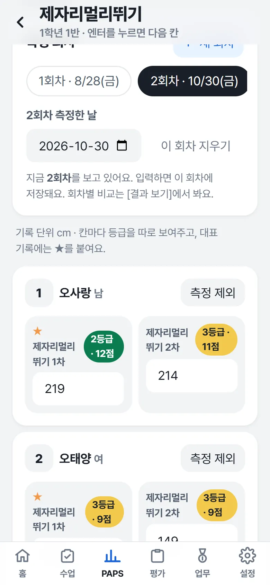
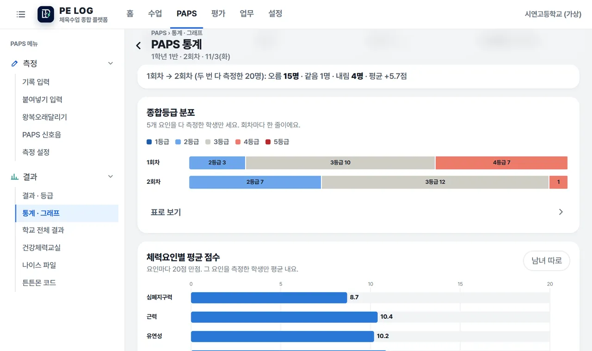
결과 · 통계 · 건강체력교실
- 통계 · 그래프: 종합등급 분포(회차마다), 체력요인별 평균(남녀 따로), 회차별 추이, 기록 분포(공식 등급 경계), 학생별 변화, 4 · 5등급 학생. 그래프를 누르면 숫자, 표로 보기도 있어요.
- 학교 전체 결과: 학급 · 학년별 등급 분포, 저체력 · 비만 수, 교육청 서식(PAPS 측정결과 · 미측정 학생 관리부) 채워 받기, 작년 같은 학년과 비교 · 전년 대비 향상 학생.
- 건강체력교실: 운영계획 → 참여 학생(대상 후보 + 희망 학생) → 활동 기록 · 참여 체크 → 1회차 → 최근 회차 변화 분석, 엑셀로 받기. 대상 기준은 학교 지침에 맞게 골라요.
- 학생 화면의 학년별 PAPS 변화: 지난 학년도 명렬이 이 기기에 있으면 고1 → 고2 → 고3을 이어서 보여 줘요.
나이스 파일 — 업로드 실패 막기
나이스는 기록이 하나라도 비었거나 범위를 벗어난 값이 있으면 파일 전체를 거부해요. 그래서 앱은 문제가 있으면 파일을 만들지 않고 목록을 보여 줘요. 목록을 누르면 그 학생 칸으로 바로 가요.
- 측정 제외 학생은 파일에서 빠져요(나이스에서 따로 처리).
- 문제 있는 학생만 빼고 받을 수도 있어요(뺀 학생 이름을 알려 줘요).
- 여러 번 측정했으면 최근 회차 · 최고 회차 · 요인별 최고 중에 골라요. 한 요인 안의 1차 · 2차 · 좌우 칸은 섞지 않아요.
튼튼몬 코드
학생마다 7글자 코드와 QR을 만들어 체력 키우기 게임 ‘튼튼몬’과 이어요. 코드에는 체력요인 4개 등급과 측정일만 들어 있어요(이름 · 학번 · 측정값 없음). A4 한 장에 12명 쪽지로 인쇄되고, 이름은 인쇄되지 않아요.
7수행평가 — 만들기 · 채점 · 나이스 파일
평가 › 평가 목록 · 채점. 평가 1개 = 나이스 양식의 영역 1칸이에요.
평가 만들기 — 편한 방법으로
평가계획서로 만들기
PDF를 넣으면 평가마다 성취기준 · 시기 · 반영비율 · 성취수준 · 채점 기준까지 읽어 한 번에 만들어요. 서술형 채점 기준은 ‘기준 점수’로 넣어 밖의 점수를 경고해요.
예시로 만들기
체크리스트형 탐구활동(만족한 개수로 점수)과 루브릭형 탐구보고서(요소별 점수 → 상 · 중 · 하) 예시를 고쳐 써요.
루브릭 만들기
성취기준(2022 개정 190개 + 2015 개정 105개)을 고르고 평가 내용(예: 농구 레이업 슛)을 적으면 평가 방법 추천과 요소 × 등급 판단 기준 초안을 만들어요.
직접 만들기
채점 요소마다 등급표(A~E → 점수) · 기록표(기록 → 구간 점수, 남녀 따로) · 점수 입력 · 체크리스트 중에 골라요.
채점 · 기록지
- 수업반 명렬이 자동으로 들어간 채점표에서 등급을 누르거나 기록 · 점수를 넣으면 합계가 자동 계산돼요. 견학 · 대체과제 학생도 표시돼요.
- 위 채점 현황에서 남은 학생 수를 보고 명단 복사로 미제출 학생을 알려 줘요.
- 체크리스트는 학생마다 ①~⑦만 누르면 만족 수 → 점수, 백지 제출 · 미응시 · 상중하 수준까지 자동이에요.
- 구글 시트 · 엑셀에 채점해 둔 표는 구글 시트 · 엑셀에서 붙여넣기로 머리글 줄부터 붙여 넣어요.
- 채점 기준 + 기록지(빈 기록지도)를 인쇄 · PDF · 엑셀로 받아요.
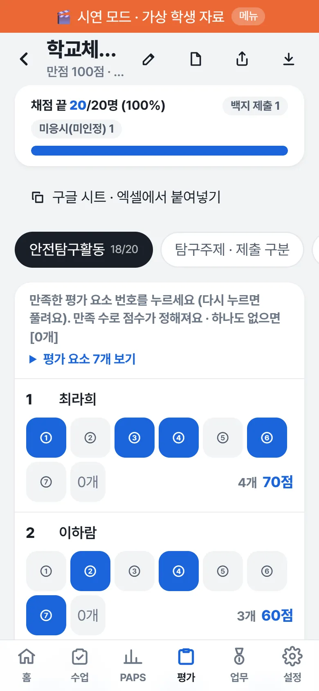
나이스로 내보내기
평가 › 나이스 파일: 나이스에서 받은 빈 양식을 올리면 점수만 채워서 돌려줘요(나머지 칸 · 병합 · 시트 이름은 그대로). 만점이 다르거나 채점이 덜 됐으면 파일을 만들지 않아요. 반영비율 환산은 나이스가 해요.
8세특 — 기록을 근거로, 수준별로
평가 › 세특 쓰기. 기록에 없는 내용은 넣지 않고, 기재요령을 바로 검사해요.
- 수준 나누기: 수행평가 점수 · 칭찬 · 관찰 기록 · PAPS 종합등급 · 지도 기록(감점)의 비중을 정하면 반 안 순위로 3~5수준을 제안해요. 근거가 표로 보이고, 학생마다 수준을 바꿀 수 있어요.
- 근거 보기: 학생을 누르면 근거가 #1 · #2 번호로 보여요. ☆로 중요 표시, 빼기로 뺄 수 있어요.
- 수준 틀로 초안 넣기: 그 수준의 분량(예: 가장 높은 수준 1,300~1,500바이트)과 짜임으로 틀 초안을 만들어요. 지도 기록은 글에 넣지 않아요.
- 선생님 문장으로 고치기: 나이스 1,500바이트와 기재요령 금지 사항(대회 · 수상, 어학 · 인증시험, 모의고사, 대학 · 기관 · 학원 · 상호명, 학교명, 유의어 등)을 바로 검사해요.
- 확정 → 나이스용 복사 또는 엑셀.
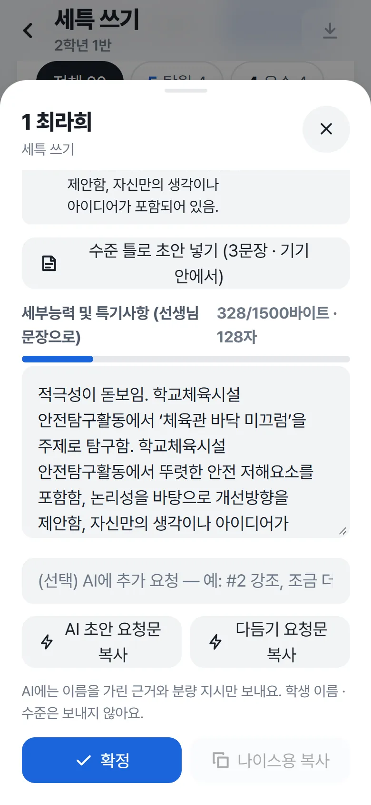
설문 · 자기평가 · 키워드 · 리포트
- 평가 › 설문 · 자기평가: 구글 설문 응답 시트를 머리글 줄부터 붙여 넣으면 학번 · 이름으로 학생을 맞춰 보관해요. 세특 편집 창에 학생이 쓴 글(참고만)으로 보이고, 초안 · AI에는 넣지 않아요.
- 평가 › 세특 키워드: 학생별 키워드와 근거 기록을 모아 보여 줘요. 기본 키워드 11개 묶음 137개.
- 학생 리포트: 한 장에 한 명씩 인쇄 · PDF(상담 · 피드백용). 견학 사유는 넣지 않아요.
9학교체육 업무
업무 › 학교체육 업무. 나이스에서 할 일과 매년 해야 하는 문서를 출처 쪽수와 함께 정리했어요.
견적서 → 품의 NEW
- 업체 견적서를 넣어요. 엑셀 · 글자가 있는 PDF는 이 기기 안에서 읽고, 메신저로 받은 견적은 글로 붙여 넣기에 붙여 넣어요. 업체마다 양식이 달라도 머리글(품명 · 규격 · 수량 · 단가 · 금액)로 칸을 찾아요.
- 사진 · 스캔본은 AI로 읽기(선택). 위아래를 잘라 업체 전화 · 주소 · 계좌 칸을 빼고 보낼 수 있어요. 키 없이 쓰면 요청문을 복사해 챗봇에 사진과 같이 붙여 넣고, 받은 답을 다시 붙여 넣어요.
- 읽은 품목을 견적서와 맞춰 보고 고쳐요. 수량 · 단가를 고치면 금액을 다시 계산하고, 견적서 합계와 다르면 노란 알림이 떠요. 부가세 별도면 부가세 10% 더하기.
- 어느 예산에서 쓸까요?: 체육 예산 항목을 고르면 지금 잔액 → 쓰고 난 뒤 잔액(모자라면 빨강).
- 내용 복사(제목 · 목적 · 소요 예산 ‘금379,500원(금삼십칠만구천오백원)’ · 예산 과목 · 붙임) · 품목 표 복사 · 엑셀 → 에듀파인 품의에 붙여 넣고 학교 양식에 맞게 고쳐요.
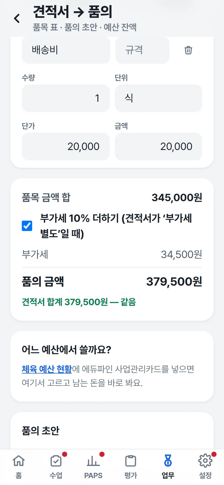
체육 예산 현황
에듀파인 사업관리카드(예산) 엑셀을 넣으면 체육 · 건강체력 · 스포츠 항목만 골라 잔액 · 집행률을 보여 줘요. 표 복사 → 선생님들이 같이 쓰는 구글 시트에 붙이면 지출금액 · 잔액 수식까지 들어가요. 엑셀 없이 직접 입력해도 돼요.
업무마다 흐름도 · 나이스 할 일 · 지침 · 양식 NEW
업무는 학교운동부 · 학교스포츠클럽 · 학교체육소위원회 · 체육대회로 묶여 있고, 업무마다 흐름도 · 나이스 할 일 · 지침 · 양식 같은 하위 메뉴가 있어요. PAPS · 건강체력교실 흐름은 PAPS › 업무에 있어요.
- 단계마다 시기, 어디서 하는 일인지 꼬리표(기안 · 회의 · 나이스 · 제출 · 교육 · 예산 · 안전), 근거 쪽이 붙어 있어요.
- 단계를 누르면 기안문 초안 · 나이스 순서 · 견적서 → 품의 · PAPS 화면으로 바로 가요.
- 공식 근거가 없는 학교 자체 일(체육대회 계획 · 정산 등)은 ‘학교마다 달라요’로 표시해요. 인쇄해 업무 인계 자료로 써도 돼요.
- 체육대회: 흐름도 · 준비 도구(종목 규칙 · 팀 나누기 · 대진표 · 보조심판 · 견적서) · 안전(행사 전 교직원 안전교육 · 사고 대응 순서).
- 현장 양식: 앱을 만든 현직 체육교사가 실제 업무에 쓴 양식을 개인정보를 지워 올려 둘 칸이에요. 양식이 올라간 업무에만 나타나요(차례로 올릴 예정).
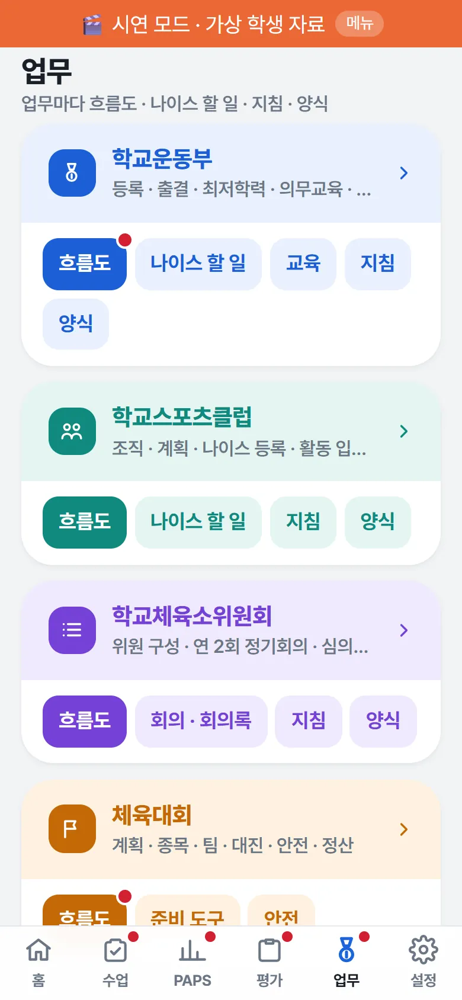
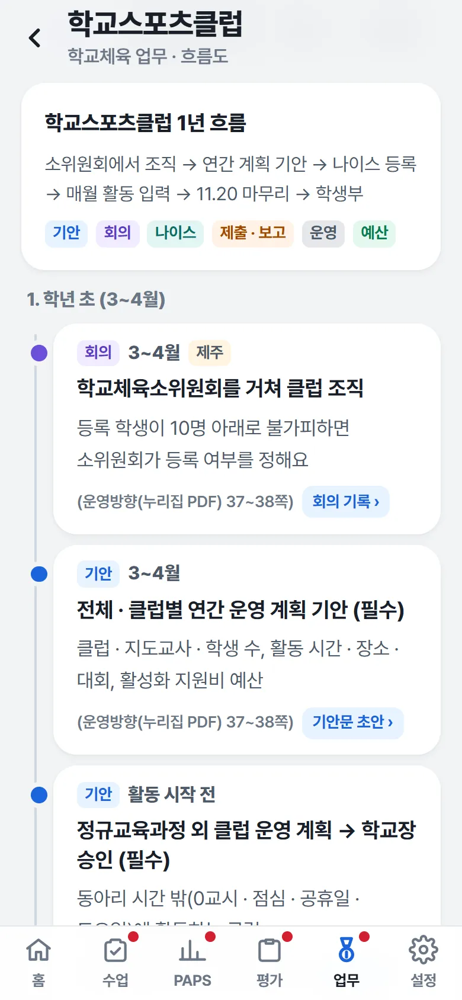
매년 기안 · 제출 문서 · 소위원회
- 매년 기안 문서 7가지(스포츠클럽 연간 운영 계획, 정규교육과정 외 스포츠클럽 운영 계획, 여학생 체육활동 활성화 계획, 건강체력교실 운영 계획, PAPS 실시 계획, 소위원회 개최, 운동부 연간 운영 계획)의 근거 · 꼭 넣을 내용을 보고, 앱 자료로 현황(여학생 수 · PAPS 결과 · 측정 종목 · 대상 학생 수)을 채운 기안문 초안을 복사해요. 교육청 제출 일정은 업무 달력에 한 번에 넣어요.
- 학교체육소위원회: 구성(5~7명, 외부위원 1명 이상) · 심의할 일 · 운영 규정 예시. 회의 · 회의록에서 위원 명단, 연 2회 정기회의 기록(성원 · 의결 기준 자동 계산), 회의록 인쇄.
학교운동부 · 학교스포츠클럽
- 나이스 탭: 메뉴 경로(학교행정업무 › …)와 버튼 순서. 일정 · 규정 · 양식 탭도 있어요.
- 학교운동부 교육 탭: 꼭 받아야 하는 교육(법적 의무교육 5가지 등)의 대상 · 횟수 · 근거 · 받는 곳.
- 교육청 공문 PDF(나이스 교육자료 · 학교체육 운영방향)를 이 기기에 넣어 두면 쪽 표시를 눌러 그 쪽이 앱 안에서 바로 열려요.
11백업 · 다른 기기로 옮기기
자료는 이 기기 안에만 있어요. 1주일에 한 번은 백업해 주세요. 7일이 지나면 홈에 알림이 떠요.
백업 · 복원
- 설정 › 백업 · 학년도 → 지금 백업 파일 받기. 받은 파일은 학교 업무용 저장 공간에 옮겨 두세요.
- 폰을 바꾸면 새 폰에서 백업 파일을 고르고 통째로 바꾸기. 바꾸기 전에 지금 자료를 한 번 더 자동 백업해요.
- 학년도가 바뀌면 새 학년도 시작. 지난 학년도 기록은 읽기 전용으로 남고, 키워드 · 설정은 이어져요.
다른 기기로 옮기기 (잠금 파일) NEW
폰과 교무실 PC를 같이 쓸 때 써요. 서버 · 클라우드 없이 파일로 옮겨요.
- 기록이 있는 기기에서 비밀번호(8자 이상)를 두 번 넣고 잠금 파일 만들기.
- 파일을 다른 기기로 옮겨요(학교 업무용 메신저 · USB 등).
- 다른 기기에서 백업 · 잠금 파일 고르기 → 비밀번호 → 합치기.
- 합치기: 지금 자료는 그대로 두고 파일에만 있는 기록을 더해요. 두 기기에서 따로 올린 같은 학생 · 수업반은 하나로 맞추고, 같은 기록을 양쪽에서 고쳤으면 더 최근 것을 써요. 설정은 이 기기 것을 둬요. 같은 파일을 두 번 합쳐도 늘어나지 않아요.
- 통째로 바꾸기: 지금 자료를 지우고 파일 그대로 바꿔요(설정 · PIN 포함).
구글 동기화 (선택) NEW
- 설정 › 백업 · 학년도 › 구글 동기화에서 동기화 비밀번호를 정하고 구글 계정을 연결해요. 다른 기기에서도 같은 구글 계정 · 같은 비밀번호로 연결해요.
- 구글 사본이 기준이에요(아이클라우드처럼). 올리기 = 구글 사본을 이 기기 자료로 바꿈, 내려받기 = 이 기기 자료를 구글 사본으로 바꿈.
- 바꾸면 기록이 사라질 때(다른 기기에서 먼저 올렸거나, 이 기기에 안 올린 기록이 있을 때)는 먼저 물어봐요. 양쪽 모두 바뀌었으면 둘 다 살리기를 권해요. 내려받기 전 이 기기 자료는 자동 백업에 남고, PIN · 홈 배치는 기기마다 그대로예요.
- 앱을 연 뒤 맨 위 동기화를 한 번 누르면, 그다음 약 1시간(구글 연결 시간)은 기록할 때마다 저절로 올려요.
- 올라가는 것은 비밀번호로 잠근 사본 하나뿐이고, 선생님 드라이브의 앱 전용 숨은 칸에 들어가요. 구글도 만든 사람도 내용을 볼 수 없고, 앱은 드라이브의 다른 파일을 보지 못해요.
- 처음엔 꺼져 있어요. 학생 정보를 클라우드에 두는 일이라 학교 · 교육청 정보보안 지침을 먼저 확인하세요.
· 한쪽에서 지운 기록은 합치면 다시 생겨요. 지우기 · 정리는 한 기기에서 한 뒤, 다른 기기는 [통째로 바꾸기]를 쓰세요.
· 잠근 파일이라도 학교 · 교육청 정보보안 지침을 따라 주세요(개인 클라우드 · 공용 PC에 두지 않기, 옮긴 뒤 지우기, 비밀번호는 같은 대화방에 적지 않기).
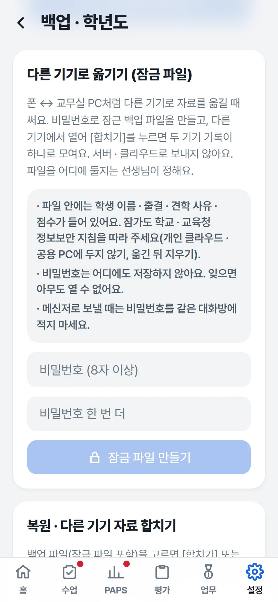
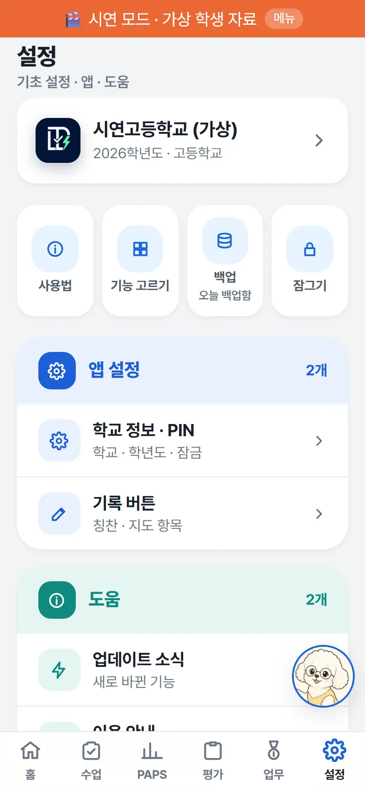
12개인정보 · 인터넷 없이 쓰기
학생 정보는 서버로 보내지 않아요. 운동장처럼 와이파이가 끊겨도 돼요.
- 한 번 열어 두면 인터넷이 없어도 기록 · 출결 · PAPS · 채점 · 타이머가 모두 동작해요.
- PIN은 화면 잠금이에요. 자료를 암호로 바꾸지는 않으니 교무실 공용 PC에서는 쓰지 마세요. 설정 › 잠그기로 바로 잠가요.
인터넷은 선생님이 누를 때만 써요
- 나이스 · 컴시간 시간표: 학교 이름 · 학교 코드만 보내고 공개 시간표 · 학사일정을 받아요.
- 날씨 · 미세먼지: 학교 위치의 격자 번호 · 시도 이름만 보내요.
- 세특 AI · 보조심판 AI: 학생 이름은 가리고, 고른 내용만 선생님이 고른 AI로 보내요.
- 견적서 사진 AI: 잘라 낸 견적서 그림만 보내요. 학생 정보는 없어요.
- 학교 공유 공간: 교구 · 예약 정보만 오가요. 학생 정보는 올리지 않아요.
개인정보 처리는 학교 · 교육청 지침을 따라 주세요. 앱의 계산(PAPS 등급 · 출석률 등)은 확인용이고, 나이스 값이 우선이에요.
13자주 묻는 질문
정말 무료인가요? 회원가입이 필요한가요?
학생 정보가 서버로 가나요?
폰과 PC에서 같이 쓸 수 있나요?
폰을 바꾸거나 브라우저 기록을 지우면요?
운동장에서 인터넷이 안 돼도 되나요?
PIN을 잊어버렸어요.
PAPS 등급이 나이스와 달라요.
나이스에 자동으로 입력해 주나요?
세특을 AI가 대신 써 주나요?
다른 학교 · 다른 지역에서도 쓸 수 있나요?
14최근 업데이트
앱 안에서는 설정 › 업데이트 소식에서 봐요. 새 기능은 메뉴에 빨간 점 · NEW로 표시돼요.
v1.21.0 · 2026-11-12
- 견적서 → 품의: 견적서(엑셀 · PDF · 사진)로 품목 표 · 품의 초안 · 예산 잔액
- 다른 기기로 옮기기: 비밀번호 잠금 파일 + 합치기
v1.20.0 · 2026-11-12
- 홈 대시보드(시계 · 날씨 그림 · D-day · 달력), 홈 화면 배치 바꾸기
- 출결 월간 보기, 교과 진도표 주간 · 월간 달력
v1.19 · 2026-11-12
- 나이스에 옮길 출결, 빠른 입력, 타이머 수업 시간에 맞추기, 땅콩이 오늘 브리핑
- 기록표 번호 · 이름 찾기, 메뉴의 새 기능 표시
v1.18.0 · 2026-11-11
- 학교운동부 교육 · 양식 탭